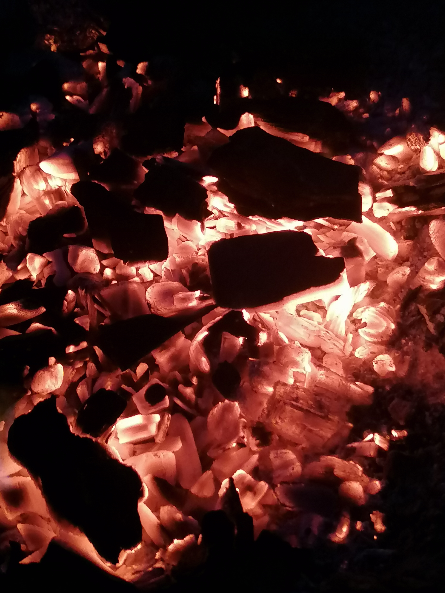

A felső képet egy hideg, téli estén csináltam hazafele menet.  Egyszer elmentünk pár munkatársammal kempingezni és lefotóztam a parazsat.
Szerintem varázslatosan nézett ki.
 Tavaly nyáron bicikliztem a természet rezervátumban és ezt a képet csináltam.
Tavaly nyáron bicikliztem a természet rezervátumban és ezt a képet csináltam.